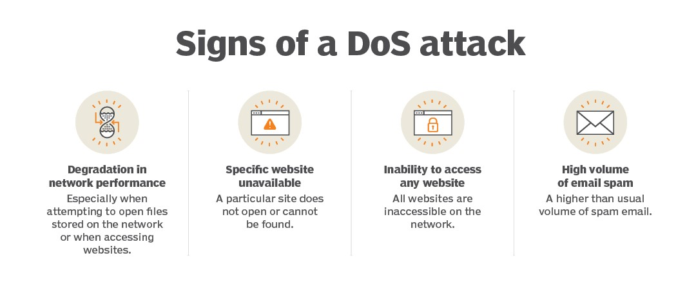

DOS (Denial Of Service) Attack
A Denial of Service (DoS)attack is a type of cyber attack that aims to disrupt the
availability of a computer system, network, or service by overwhelming it with a high volume of traffic.
The goal of a DoS attack is to make the targeted system or service unavailable to legitimate users,
essentially denying them access. DoS attacks can last from a few hours to many months, costing companies and consumers time
and money while their resources and services are unavailable.
- Attackers in these types of attacks typically flood web servers, systems or networks with traffic that overwhelms the victim's resources and makes it difficult or impossible for anyone else to access them.
- DoS and DDoS attacks often take advantage of vulnerabilities in networking protocols and how they handle network traffic. For example, an attacker might overwhelm the service by transmitting many packets to a vulnerable network service from different Internet Protocol (IP) addresses.
- DoS and DDoS attacks target one or more of the seven layers of the Open Systems Interconnection (OSI) model

Types of DoS attacks
DoS and DDoS attacks have a variety of methods of attack. Common types of denial-of-service attacks include the following:
- Application layer These attacks generate fake traffic to internet application servers, especially domain name system (DNS) servers or Hypertext Transfer Protocol (HTTP) servers. Some application layer DoS attacks flood the target servers with network data; others target the victim's application server or protocol, looking for vulnerabilities.
- Buffer overflow This type of attack is one that sends more traffic to a network resource than it was designed to handle.
- DNS amplification In a DNS DoS attack, the attacker generates DNS requests that appear to have originated from an IP address in the targeted network and sends them to misconfigured DNS servers managed by third parties. The amplification occurs as the intermediate DNS servers respond to the fake DNS requests. The responses from intermediate DNS servers to the requests may contain more data than ordinary DNS responses, which requires more resources to process. This can result in legitimate users being denied access to the service.
- Ping of death These attacks abuse the ping protocol by sending request messages with oversized payloads, causing the target systems to become overwhelmed, to stop responding to legitimate requests for service and to possibly crash the victim's systems.
- State exhaustion These attacks also known as Transmission Control Protocol (TCP) attacks -- occur when an attacker targets the state tables held in firewalls, routers and other network devices and fills them with attack data. When these devices incorporate stateful inspection of network circuits, attackers may be able to fill the state tables by opening more TCP circuits than the victim's system can handle at once, preventing legitimate users from accessing the network resource.
- SYN flood This attack abuses the TCP handshake protocol by which a client establishes a TCP connection with a server. In a SYN flood attack, the attacker directs a high-volume stream of requests to open TCP connections with the victim server with no intention of completing the circuits. A successful attack can deny legitimate users access to the targeted server.
- Teardrop These attacks exploit flaws like how older operating systems (OSes) handled fragmented IP packets. The IP specification enables packet fragmentation when the packets are too large to be handled by intermediary routers, and it requires packet fragments to specify fragment offsets. In teardrop attacks, the fragment offsets are set to overlap each other. Hosts running affected OSes are then unable to reassemble the fragments, and the attack can crash the system.